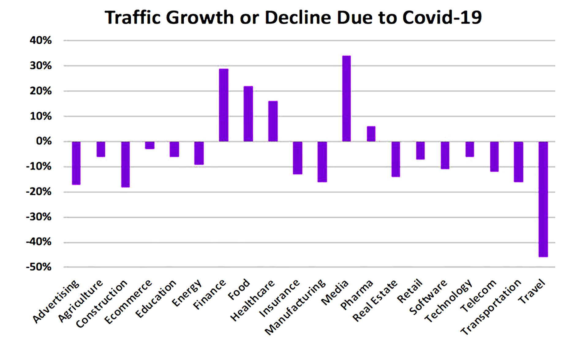
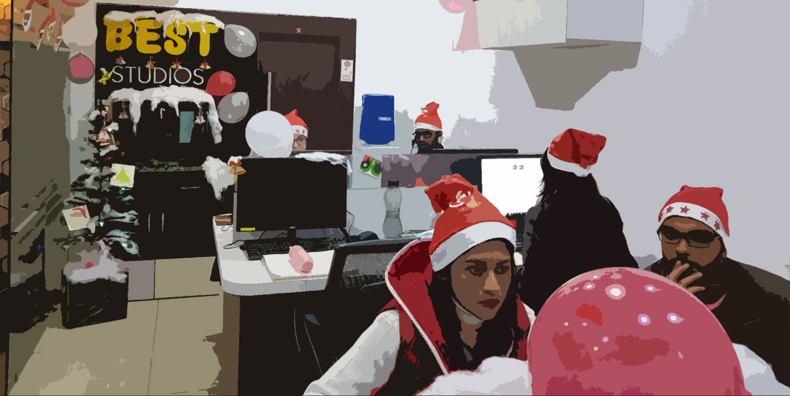

Every business is ready to jump back into the market, however, with all the ongoing crisis and stay at home orders, it’s best to make the most of the time by understanding about consumer behaviors at the moment; learn how different industries are getting affected; and how marketers need to mend some ways to counter the impact of COVID-19 in the coming times.
With most of the people working from home, learning online, and spending more time online than usual, as an animation company, I can assure that this is a great time to take note of the shifting consumer behavior. As more and more of your potential prospects will be spending a lot of their time online, a rise in explainer videos, educational videos, marketing videos, promotional videos across different channels/industries can be witnessed.
By now, you must’ve realized the severity of the pandemic that we are going through. Businesses are shutting up shops and economies are crashing, let alone the death tolls. Per this moment, there are 2,834,366 confirmed COVID-19 (Coronavirus) cases worldwide with over 197,409 deaths and it is predicted that European and the US economies could take the next three years to cover up for this crisis. We are getting roughly 14,000 new cases a day and it’s growing fast. My thoughts are with everyone who is personally impacted.
Impact of COVID-19 on business across the world
Even if the virus slows down fast as the numbers have dropped in China, businesses will still struggle for over a year because they must make up for their losses.
For example, in China the virus caused retail sales to drop by 20.5% and the unemployment rate jumped to 6.2 in February.
When big companies like Apple shut down their stores to help reduce the spread, it means less income and less profit. Since they are so big sure they will be able to pay their employees during their temporary shutdown, but not all companies/businesses have such a big bank balance and most won’t be able to do the same.
The most affected industry in this coronavirus pandemic is the travel industry. The virus is expected to lose them 820 billion dollars. Virgin Atlantic just asked their staff to take an 8-week unpaid leave.
It’s estimated that in total COVID-19 will cost the global economy $2.7 trillion.
Why video marketing or animated videos are important in such situation?
Regardless of whether you need to or not, you should incorporate video marketing into your procedure in request to remain focused and applicable. Video content is popular due to how simple it is for your masses to assimilate the information. Undoubtedly, video marketing is setting down deep roots, which is the reason your company needs to get with the pattern!
At present day, numerous individuals relate more to video content, as they are very engaging contrasted with some other substance. Insights show that around 77% of individuals watch videos on a weekly basis, though 55% watch online videos on a daily basis. What's more, the numbers are on the ascent.
What this lets you know is that there is an enormous market for video content, and just the correct video marketing techniques will guarantee that your videos contact the correct audience.
There have been numerous video marketing patterns that have been advanced, and they don't appear to back off. It very well may be hard to anticipate upcoming marketing with video patterns however here are the absolute top 10 video marketing trends for your business in 2020, which can be used to showcase your marketing videos in this 2020.
Video Marketing Trends for Your Business in 2020
1. Target audience:
This is one of the trends for marketing with videos, we hope to see in 2020 is the ascent of videos with messages that are focused on explicit mass gatherings. Messages will be- client first and ultra-focused on. This is will be the best utilization of video marketing and is as of now demonstrated to increase commitment.
Approaching these masses ought to be simpler than any time in recent memory. One approach to focus on your masses is to utilize Facebook custom public. You can make a 'warm' crowd of individuals who've viewed a certain measure of videos from your page. Next, make a clone crowd prospect for clients who look and carry on simply like the original video watchers.
AI innovation continues to improve day by day, we think we will likewise be seeing an ascent in video content custom fitted around long-tail catchphrases. This will additionally enable us to focus on these crowds and get increasingly qualified leads by tailoring your messaging explicitly to them.
2. Shoppable video marketing:
Internet-based life selling is maybe one of the key eCommerce patterns we've found as of late. As an answer to stay aware of the present on-request economy, this has improved and quickened exchanges among merchants and purchasers. In any case, it requires numerous businesses to change the manner in which they make content for online networking.
This leads us toward the following thing on our rundown of online video patterns shoppable videos. These are generally videos that enable internet-based life clients to buy things on the spot. With these, customers never again need to go to physically find the item they need. They should simply tap on the item on the video that they need so they're consequently diverted to your site. At times, they can even simply add to the bag and go directly to checkout. In this manner, you can abbreviate the client travel and quicken conversions.
If you want, you can also use this feature on other types of video content. For beginners, you can get in touch with video producing companies for getting your business better and interact with the masses. There are numerous video production companies out there.
3. Instagram stories will grow faster in video marketing 2020:
Watchers like Instagram stories since they feel more bona fide than the majority of the substance posted via web-based networking media. In contrast with the greater part of the well-arranged substance on the feed, stories add an increasingly customized way to deal with Instagram.
Through joining Instagram stories into your video marketing methodology, you will have the option to interface with your watchers better and make an increasingly customized, trusted connection among them and the brand.
Individuals prefer to view behind these scenes, sneak looks of new items, promotional codes/limits, and so forth. It makes them feel like they are uncommon and that they are a piece of something greater than themselves.
4. Google ads video in marketing:
In the year 2020, we foresee that an ever-increasing number of advertisers will go to Google Ads video crusades. Google video advertisements show up on YouTube or over the Display Network destinations. We definitely realize that YouTube is the world's second most utilized internet searcher, which is the reason your video marketing system needs to include video advertisements.
Millennials expand video content for 3.4 hours daily and when asked which stage they go to when they need to unwind or perk up, the number 1 reaction was YouTube.
5. Interactive videos:
The interactive videos may not always work for each company, but there are such huge numbers of cool and interactive approaches to utilize augmented reality.
With the ascent of increased and computer-generated reality advancements, creating this kind of videos is simpler than any time in recent memory. To such an extent that very nearly ⅓ of Video Production Agency have begun utilizing interactive video as a channel.
Remember that AR, motion graphicb and VR advancements are as yet developing. In this way, as these advances get further developed, we can anticipate that interactive videos should be progressively multifaceted soon.
6. Videos for educational purposes:
Instructive videos increase the value of the client experience. With these, customers don't feel like they're being offered to so they are bound to feel that your image has more to offer than simply your items and administrations.
Posting explainer videos related to education that teaches, your objective market can assist you with bolstering yourself as an idea chief in your industry.
Most customers maintain a strategic distance from video promotions, however much as could be expected. So, the main time they would in all likelihood click on marked videos is the point at which the substance is interesting or informative.
7. SEO based videos:
Video content should be upgraded the equivalent as your site, web journals, and many other composed substances appear. As viewing videos on YouTube and other comparable stages become increasingly predominant, it's progressively hard to get your marked videos to stick out. Thusly, you have to design the video SEO to ensure the videos rank top on the list of items.
8. Live videos:
Customers see live videos as more engaging and bona fide than recorded and altered substances. Thus, a greater amount of them inclines toward consuming this sort of substance over other marked materials.
Internet-based life calculations have as of late changed to organize content from individuals over brands. Be that as it may, these calculations additionally organize ongoing substance. Consequently, you can use live streaming to further your potential benefit.
9. Vlogging videos:
Vlogging is a significant instrument among big names and influencers with regard to reaching out to their fans. Thus, brands can utilize this to interface with their most faithful clients.
Video blogs offer a progressively crude and unfiltered perspective on your image, so using it as a feature of your video marketing technique can assist you with humanizing your image and construct customer trust.
Vlogging is an additional interesting method for introducing your image. With this, you can tell the best way to utilize your items, give behind-the-scenes videos of your tasks, and such.
10. The video goes OTT:
The term OTT alludes to Over-The-Top. More individuals are consuming OTT substances and using OTT gadgets. On the off chance that you need to catch these masses by creating OTT recordings is a decent spot to begin.
OTT stages are gushed on various gadgets; in this manner, you will need to make content that can adjust to every one of them
Most OTT services influence calculations to filter the best substance for every client. Along these lines, advertisers can without much of a stretch utilize this for their focus on recordings.
How to be more effective in video marketing?
- ● Concentrate on one topic. Try not to befuddle your crowd by trying to cover various subjects. Be straight advance and arrive at the point as fast as possible.
- ● Keep your videos short. Individuals have limited ability to focus, which is the reason shorter videos have higher conversion rates. Ensure you utilize the perfect length video for every stage.
- ● Add a source of inspiration toward the end of your video. In the event that you need your watchers to make a move, let them realize what they ought to do straight away.
- ● Include captions in your videos. The vast majority of people watch videos on their cell phones or PCs without sound so include captions so they can even now comprehend your message.
Best Animation Studios
Business proprietors ought to embrace an Best Animation Studios to upgrade its business esteems and ubiquity. Eliminating the method of marketing through content and pictures are the old rendition. It shouldn't work today. Nobody has that much time and interest to find out about items and administrations however the vivified videos are the best approach to pull in an ever-increasing number of guests to your site.
The best animation studios company is here to give you the excellent, alluring and one of a kind energized video which will support your site traffic and guests that will lead you to the high scope of business esteems.
Conclusion
These are the top 10 video marketing trends in 2020. No doubt Video marketing is an indispensable instrument in all businesses. In any case, before choosing any video marketing methodology, it is basic to find out which one will work best for your image. Keep in mind, you can utilize multiple or even the entirety of the video marketing procedures referenced above-everything relies upon your authoritative needs.
The bottom line
These are difficult times; people are losing their dear ones, and many are suffering big monetary losses due to shattered financial systems. However, try to see the silver lining and re-strategize your current outreach and communication strategies. Make the most of it by realizing the possible opportunities and leveraging suitable channels (online) to connect with your prospects and customers. Sometimes the simple of methodologies work wonder. We are all in it together, the quarantine won’t last forever.